Antalya is one of the most visited cities in the world, drawing over 18 million visitors from all over the world every year. It serves as a gateway to the turquoise waters of the Turkish Riviera (appropriately named the Turquoise Coast) and is the perfect place to begin your trip. Antalya has plenty to offer: a beautiful Ottoman old town, ancient Greek ruins, waterfalls and canyons.
The Turkish Riviera is a great destination for everyone, from backpackers to families. It is easy to navigate, affordable and full of tourism infrastructure. The best way to visit the region is to fly into Antalya or Bodrum, the two major cities at the east and west ends of the Riviera. You can then make your way by bus, car or even sail (read my article on the sailing experience) between the many smaller towns along the way. If you're short on time, the stretch between Fethiye and Ölüdeniz was my favorite (read my Fethiye and Ölüdeniz guide), and you can just fly directly there through Dalaman Airport.
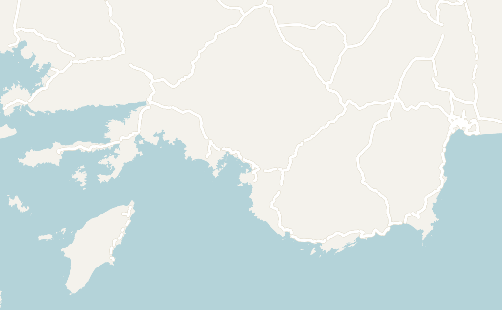
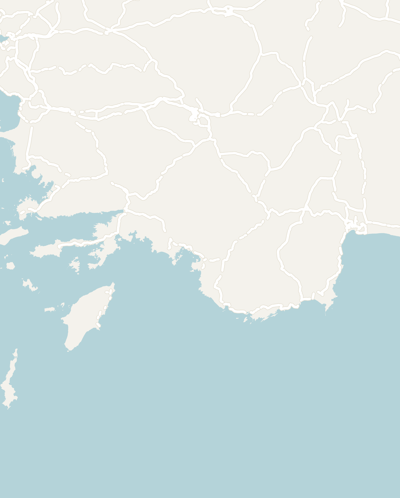
Double-tap to open in Google Maps
The best time to visit is June or September to October, when the sea is warm enough to swim but the heat and the crowds aren't as intense as in July and August. I was here in mid-May, before the season had really started, which was good for the sites and quiet for the nightlife, with one club playing techno to about 9 people. The real highlights of the Turkish Riviera are the smaller towns further down the coast like Kaş or Ölüdeniz. However, it is worth spending a couple of days in Antalya before heading off to explore the rest of the Turkish Riviera. I recommend spending one day exploring the city and the waterfalls, and a second on a day trip to the ancient city of Sagalassos or white-water rafting.
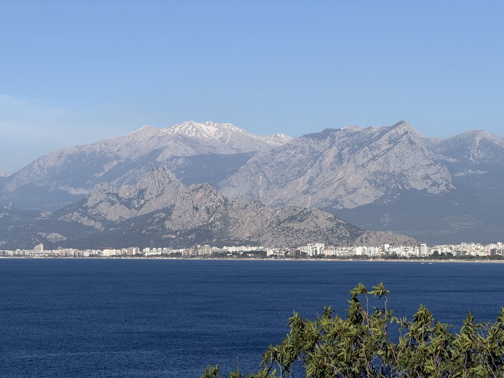
Getting to Antalya
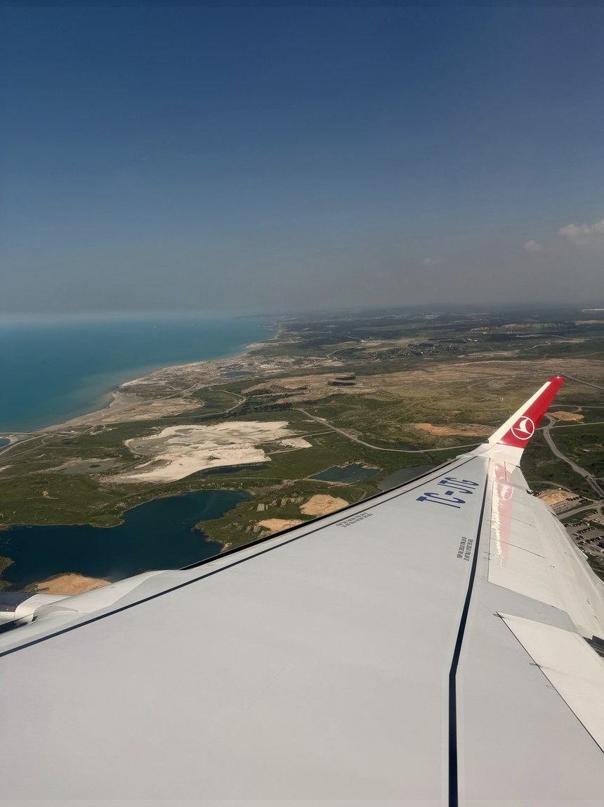
Antalya's international airport offers connections to over 200 destinations in more than 50 countries, including every major Turkish city and most major cities in Europe. You can also fly into the other airports along the coast: Gazipaşa-Alanya (GZP), Dalaman (DLM) and Milas-Bodrum (BJV). Once you arrive, the AntRay tram (line T1A) runs from the airport straight into the city center and takes about an hour.
Transport in this region of Türkiye is extremely easy to navigate with frequent connections and even signs and announcements in English. Once you're in Antalya, the best ways to get around are:
- City Buses — clearly marked, stops everywhere and cheap. Expect to pay about 46 lira (around $1) a ride. The only catch is speed: I used them around Antalya, but eventually gave up and took taxis because I didn't want to wait
- Tram — you'll see a modern tram called the AntRay tram throughout the city. Line T1A runs from the airport through the center to İsmetpaşa, by the old town, and the old-fashioned T2 Nostalji tram runs along the coast road past Kaleiçi. Contactless credit cards are accepted onboard
- Ridesharing Apps and Taxis — the quickest way around and relatively affordable. Uber works here and books the city's licensed yellow taxis, and BiTaksi is the local app most people use
- Long-Distance Buses — to get between cities, long-distance buses were the easiest and most convenient way to get around. There are frequent connections between popular destinations and you can book in advance using the Obilet app. Look up travel times in advance, because routes that look short on the map typically take much longer
Antalya — The City Itself
Antalya is the fifth-largest city in Türkiye, and most of it is a modern, sprawling metropolis where regular people live and work. As a visitor, the main attractions can be visited in a single day: base yourself out of the Kaleiçi Old Town and visit both ends of the Düden Falls, each a completely different take on the same waterfall.
If you came to Türkiye to experience the Turquoise Coast, I would wait until you reach one of the smaller towns further along the coast, like Kaş, Fethiye, Ölüdeniz, or take the Blue Cruise. You'll likely be sold the "Maldives of Türkiye", the Suluada Island Tour from Antalya. It is extremely crowded, and there are more pleasant boat trips further down the coast.
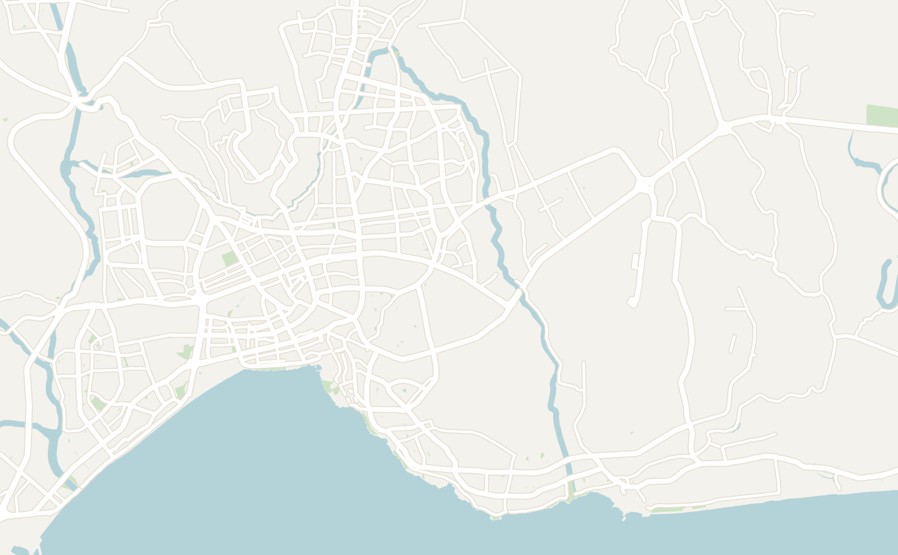
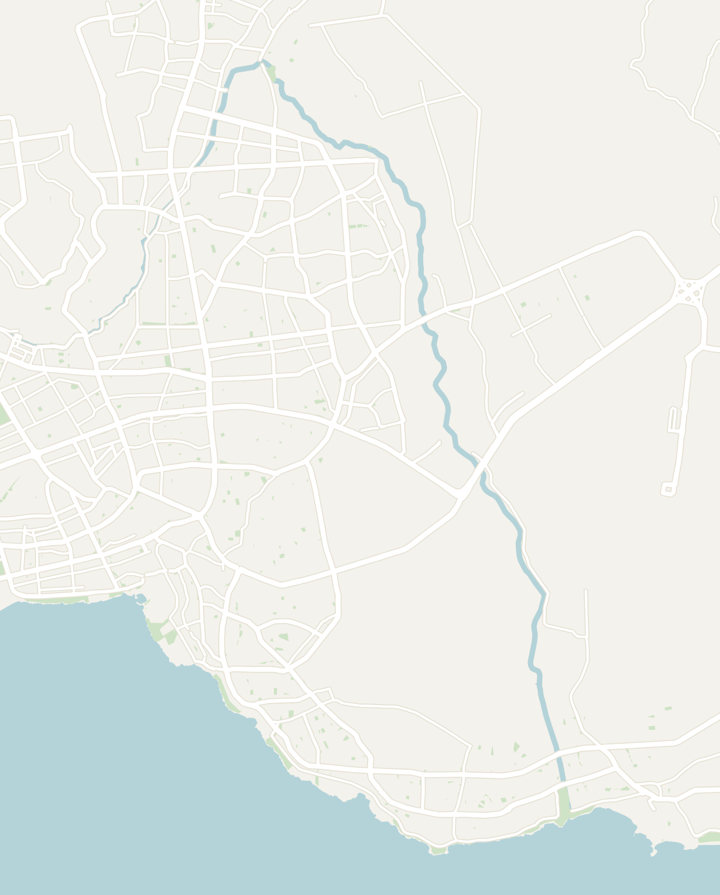
Double-tap to open in Google Maps
Kaleiçi Old Town
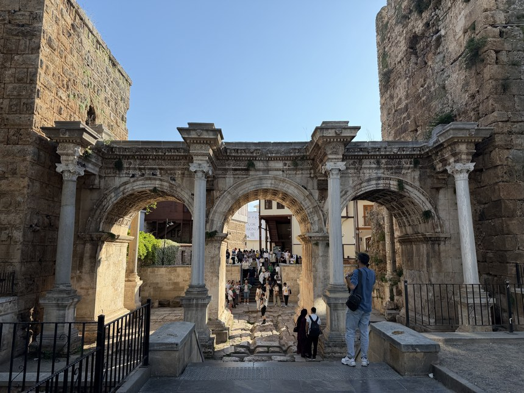
Kaleiçi, the Ottoman old town, is hands down my favorite part of Antalya and the best place to stay. It dates back to around 150 BC, when King Attalos II of Pergamon founded the city, and nearly everyone who has held this coast since has left something in it: the Romans built Hadrian's Gate for the emperor's visit in 130 AD, the Byzantines kept the walls, the Seljuks added the fluted Yivli Minaret in the 13th century, and the Ottomans filled the lanes with the houses you walk past today.
Enter through Hadrian's Gate at the top and you can walk down through the old town all the way to the sea. The old quarter is immaculately restored with tan marble underfoot and Ottoman buildings lining the narrow walking streets. It reminded me a bit of Split in Croatia with a stronger Ottoman architectural influence. The Kaleiçi quarter is pretty small. It takes 10 to 15 minutes to walk end to end, and half a day covers it properly.
The best way to see it is to wander with no plan: in through Hadrian's Gate, across to the Clock Tower and the Yivli Minaret, then downhill through the lanes to the old harbor. This is where the Romans once moored their ships, and where the boat trips to the waterfalls leave from today. In between are boutique hotels in restored Ottoman houses, courtyard restaurants and shop after shop of lamps, rugs and Turkish delight.
My favorite time to explore was early in the morning before the streets get crowded. I wandered through before noon and had the lanes more or less to myself. The city also comes alive at night with tourists spilling out onto the tables of the outdoor bars and restaurants. The nightlife wasn't great when I visited in May, though.


Karaalioğlu Park
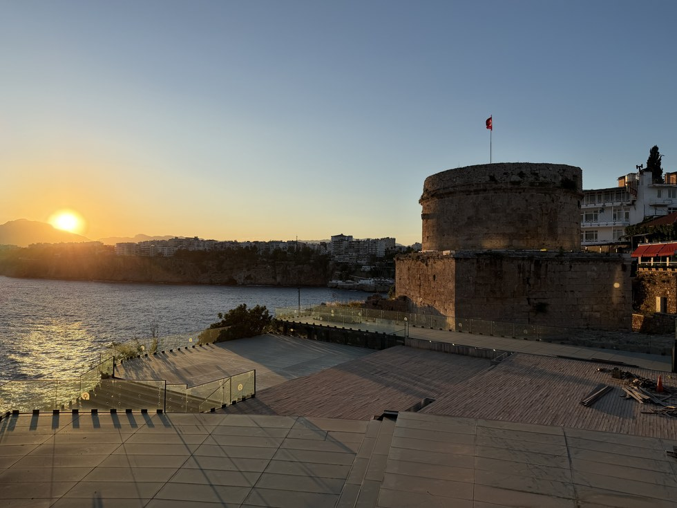
At the southern edge of Kaleiçi lies Karaalioğlu Park on the cliffs overlooking the sea. It is a 10-minute walk down from Hadrian's Gate and a long promenade along the cliff top with the whole bay in front of you. You can see the mountains across the water, tea gardens under the trees, and locals out walking in the evening. The park itself is a bit underwhelming apart from the view with strange statues scattered throughout.
The corner nearest the old town is Hıdırlık Tower, a squat round Roman tower from the 2nd century that has been a lighthouse and a lookout over the years. Go an hour before sunset, get a çay (a small glass of Turkish tea) from one of the gardens and watch the sun drop behind the mountains with the harbor below you. It is the best sunset spot in the city, and you might catch local musicians playing along the water.

Düden Falls
The Düden Falls were another highlight of Antalya. You get to see both ends of the same waterfall system, and they couldn't be more different.
Start your visit with the towering Lower Düden Falls where the river pours off the cliffs straight into the sea. The scale of the waterfalls is massive (see the photo below making a 3-story yacht look tiny!) and 30 cubic meters of water pour over the edge of the Lower Düden Falls every second. You can reach them by coastal bus or rideshare. You'll be dropped at the start of a pedestrian path that follows a slow, bright turquoise river, and at the end the whole river goes off a cliff into the Mediterranean.
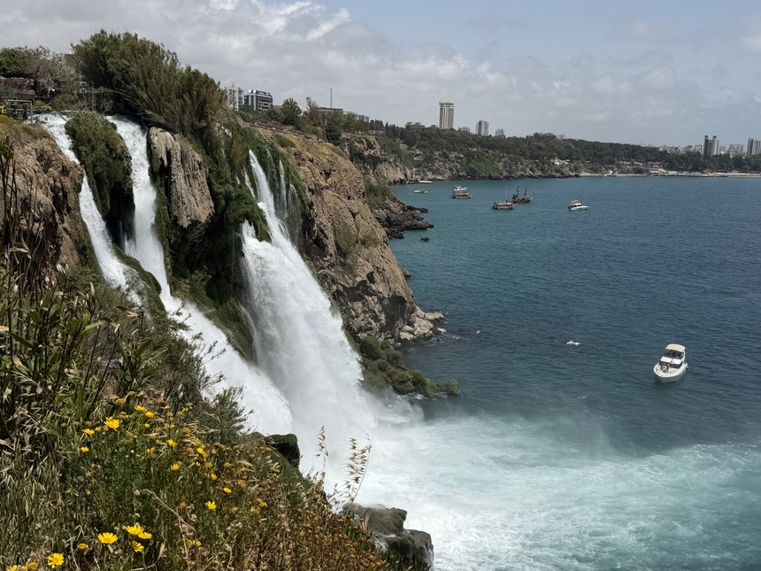
Next, head to the Upper Düden Falls, 40 minutes away by taxi on a road that follows the river back toward its source. The upper half of the falls lies in an old touristy park and costs 100 lira (about $2) to enter. The river here is an even brighter turquoise with 5 smaller falls running side by side. There is a clear walking path to follow and you'll walk through a lush green area with cave tunnels that are even inhabited by bats! Personally, I enjoyed the Upper Düden Falls more, but both halves are worth doing and will take you the majority of the day including transport.
The two halves are far enough apart that a taxi between them is worth it. The bus from the Upper Düden Falls was extremely unreliable. I tried 3 bus lines before giving up and calling a taxi back to Kaleiçi.
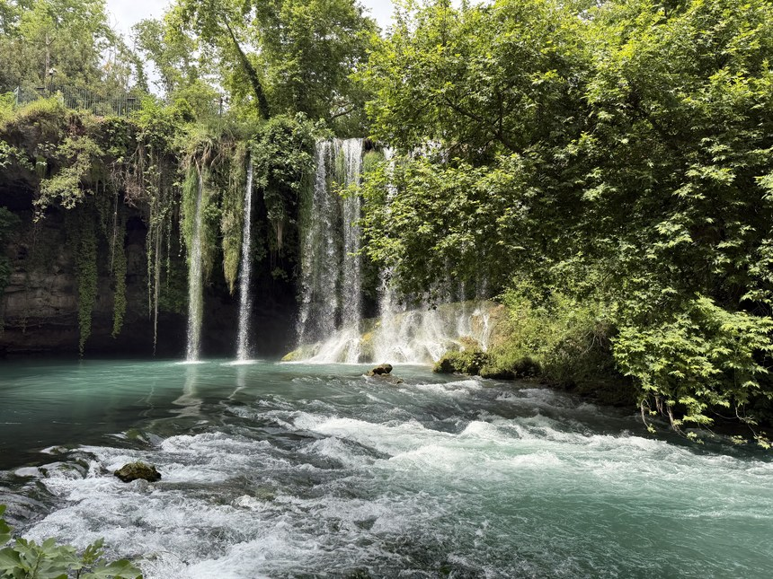
Day Trips Down the Coast
The real value of Antalya is as a base. Within 3 hours of the old town there are Roman cities, a rafting canyon and the prettiest towns on the coast, and nearly all of them work as a day trip. You can visit all of them on tours from tours from GetYourGuide or the agencies or the agencies around town, or rent a car and go independently.
The Ancient City of Sagalassos
The ancient ruins along this stretch of Türkiye are arguably more impressive than the ones I have seen in Greece, with a fraction of the visitors. The region has a deep shared history and this portion of Türkiye's coast is lined with impressive archeological sites ranging from the ancient Greek city states to the Romans.
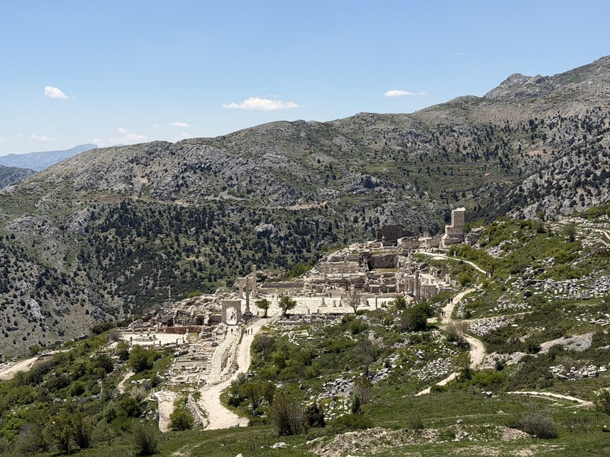
Sagalassos is the best example of that: a remarkably well-preserved Roman city located a 3-hour drive inland from Antalya. I knew nothing about it going in, and only decided to join two brothers from Bend, Oregon a few hours before. The drive is half the trip: wild goats and wildflowers along the road, snow-capped mountains behind them and small villages tucked into the green hills.
The site itself is an enormous Roman city, complete with a theater, baths, a main square and a reconstructed fountain. It takes about 30 minutes to walk from one end to the other, and we spent half a day exploring. Climb to the top of the impressive amphitheater, then into the tunnels underneath and then to the hillside covered with ancient tombs. I'd never seen ancient ruins this big, and it was hard to picture how many people must have lived here in Roman times.
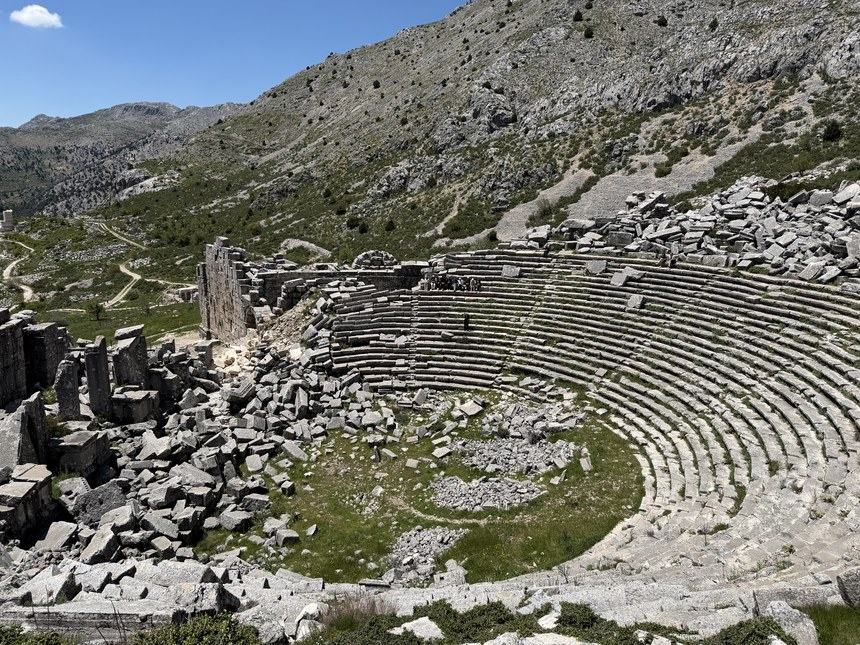
The bonus was the lack of crowds. Similar sites in Italy or Greece would be packed. There were a few buses of Turkish tourist groups, but it wasn't busy and we felt free to explore. If 3 hours each way is too much driving, there are other similar sites like Aspendos Theatre and Termessos, both roughly 45 minutes away from Antalya.

For the history nerds: Sagalassos was a city of the Pisidians, a mountain people, built at around 1,500 meters in the Taurus Mountains. Alexander the Great took it in 333 BC on his way east, and under the Romans it grew rich enough that Emperor Hadrian named it the first city of Pisidia. Earthquakes in the 6th and 7th centuries emptied it, and it lay under its own rubble until a Belgian team from the University of Leuven began excavating in 1990. So much of it fell where it stood that they have been able to put it back together piece by piece, which is how the Antonine Fountain in the upper square runs again.
Köprülü Canyon
If you're looking for more of an adventure, Köprülü Canyon is located 1.5 hours north of Antalya. Often overlooked, the canyon has deep turquoise water running through it and the standard trip out is a rafting day. I booked a tour from Antalya with Cactus Rafting for $30 all in, including a jeep safari, a zipline, an overlook above Tazı Canyon and the rafting. To be honest, the "adventure" part of this tour is a bit oversold since the white-water rapids are pretty light (class 2 on the international scale). This tour is not a must while in Antalya, but it would be a great day out for families or first-timers.
That said, the day was packed with fun activities. It started with a pick-up directly from my accommodation in Kaleiçi. The group was mostly Russian, with one Australian and one other American besides me. The first activity was the jeep safari: open top, everyone standing up in life jackets, driver playing Russian rap at full volume while swerving on a mountain road. We then did dune buggies and the zipline (a double line that crosses the river and back).

Next was the overlook above Tazı Canyon, the most beautiful sight of the day. It was even brighter green in person. The rafting fills the afternoon (if you're feeling bold, you can swim in the freezing river), and the day ends with a Turkish lunch of rice and salads before heading back to Antalya.
Kaş
Located 3 to 4 hours down the coast, Kaş is the prettiest town on the Riviera and the one place I wish I had given a night to instead of a few hours. Kaş is a small marina town with steep alleys and shops, beautiful beaches and enough to keep you busy for a few days. If you're deciding between a third day in Antalya and a day here, come to Kaş. It is doable by day trip from Antalya, but most of the day will be spent driving (3 to 4 hours each way) so I highly recommend planning a couple nights here. Many other travelers I met spent a week relaxing in Kaş and said it was the highlight of their trip.
There is also a restored ancient amphitheater sitting above the water, in much better shape than other Lycian monuments along the coast. Walk about 10 minutes past it and you reach İnceboğaz Çınar Beach, a small beach with clear blue water and rows of chairs to relax in. The other thing worth doing is the walk out to Limanağzı, a cliffside path through Mediterranean scrub on dusty orange dirt, past Lycian rock tombs, with a steep climb at the end and the water below you the whole way. After dark, Queen is the terrace bar everyone ends up at.
Further Down the Turkish Riviera
Past Kaş the coast keeps going, and Ölüdeniz and Fethiye are about 3 hours from Antalya by road. I'd treat these towns as your next stops rather than a day trip, since most of the day would be spent driving. I highly recommend doing the blue cruise, a sail that stops at many of the highlights along the coast.
I've written a dedicated guide to Fethiye and Ölüdeniz, but here is a short preview: the two towns sit 20 minutes apart and could hardly be less alike. Fethiye is a mid-size port city, full of new construction, where a lot of people from Istanbul come to retire. Ölüdeniz is a small resort town, far more touristy and far better looking. It is home to the Blue Lagoon: a sandbar running out from the shore with the brightest water in Türkiye on either side. The main things to do here are paragliding and the famous multi-day Lycian Way hike.
Where to Eat
I've always loved Turkish food, even back at home, but Antalya is where I discovered the next layer of Turkish cuisine. Here are my favorite places from my time in Antalya, and most of them were very affordable:
Paşa Bey — a local recommended Paşa Bey to me as the best restaurant in the city and he was absolutely right. The restaurant is an upscale sit-down place, located a short walk from Kaleiçi. I really enjoyed the Iskender kebab: döner mixed with small chunks of bread that have been cooked in tomato sauce and served with cream. The meal also came with a salad, yogurt and bread with a tomato salsa on the side. It was the best meal I ate on my second trip to Türkiye
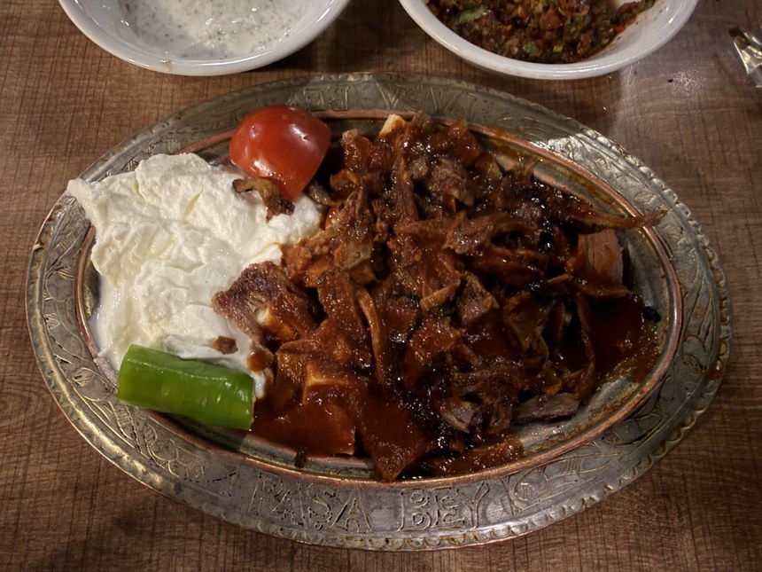
- Tarihi Ankara Simit Fırını — a bakery run by a Kurdish family just outside the old town. It seemed to be a popular spot with the locals. I loved it so much that I went back 3 mornings in a row. Order a çay with the menemen (Turkish scrambled eggs with tomato and peppers, eaten with bread) or the kol böreği, a rolled pastry filled with meat and cheese. Prices were affordable and the staff was very friendly
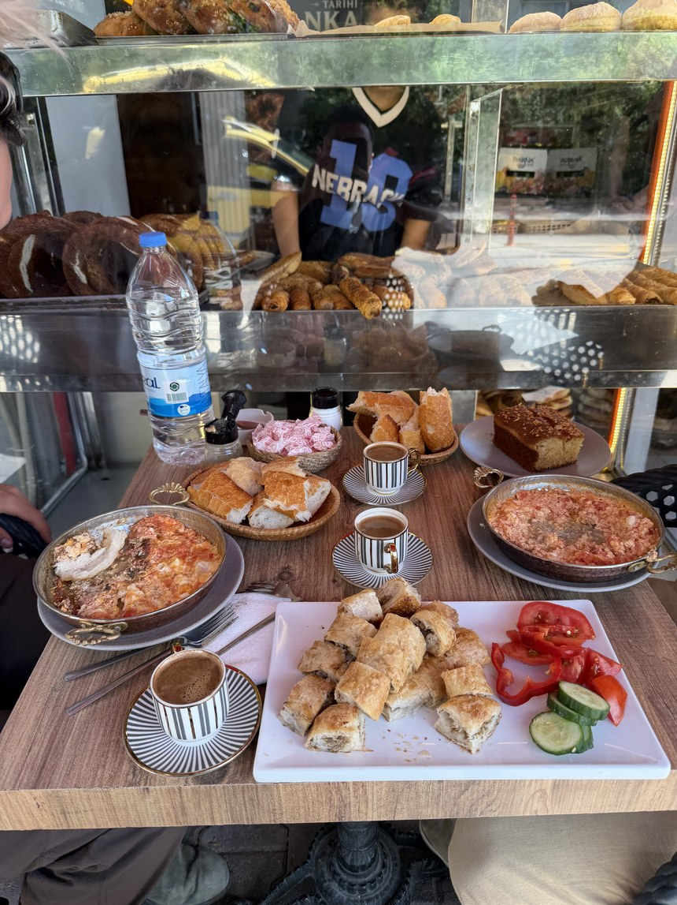
- Üstat lokantası — cafeteria-style Turkish food, recommended to me by several locals. You walk along the counter and point at what you want from trays of stews, rice, beans and vegetables. The portions are large and affordable. It is where people working nearby eat lunch, so go around midday, when everything is fresh
- Doys Döner — no trip to Türkiye is complete without a massive spicy döner. I got the tavuk (chicken) döner, and the thing was the size of my arm! Doys Döner takes spice seriously: think twice before asking for the spicy option
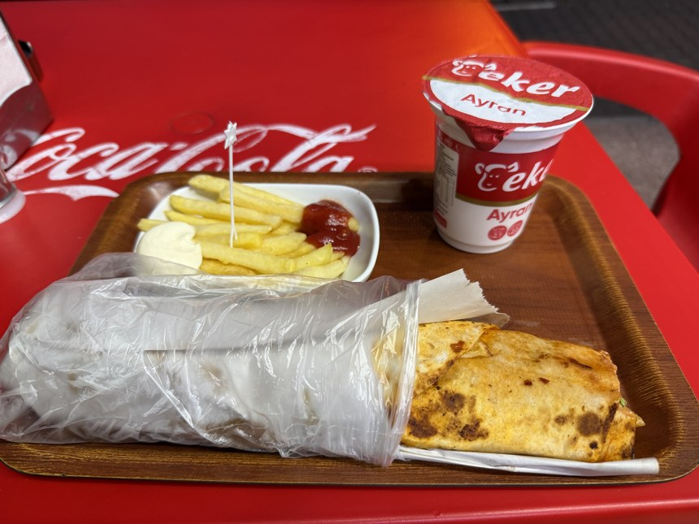
Where to Stay
I highly recommend staying near Kaleiçi. The area is small and you'll be close to the restaurants, bars and the sea, and get to enjoy the Ottoman old town to the fullest. I stayed at two places: one I would recommend and one I would not:
Kiana Kaleiçi is an affordable hotel located right in the middle of Kaleiçi. The rooms were well kept, the staff were happy to help, and it is the one I would book again.
I would skip the Gold Coast Hostel. It was run down, a couple of the staff were weird, and the door to my room broke twice and locked me inside. After spending one night there, I got a hotel nearby the next morning and was glad I did.
Explore More
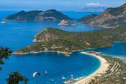
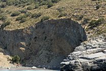
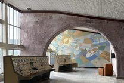